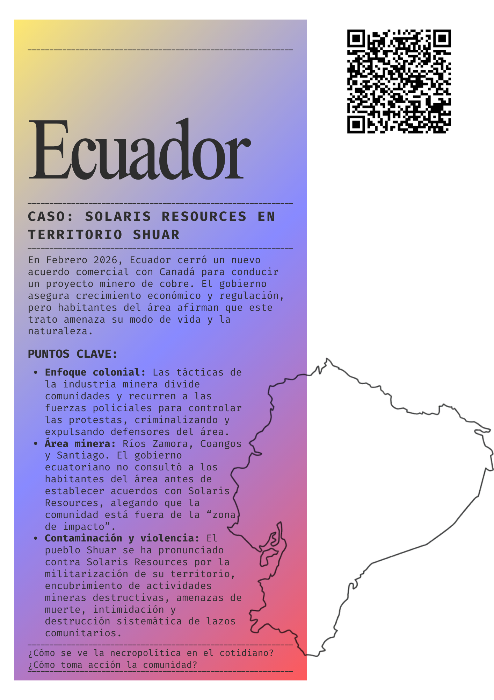
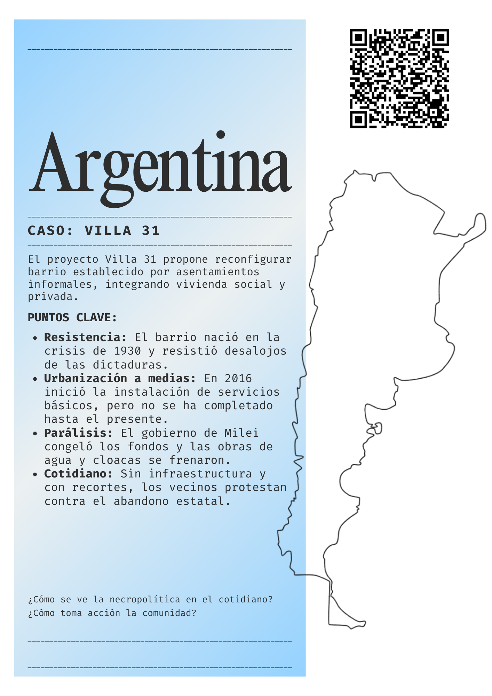
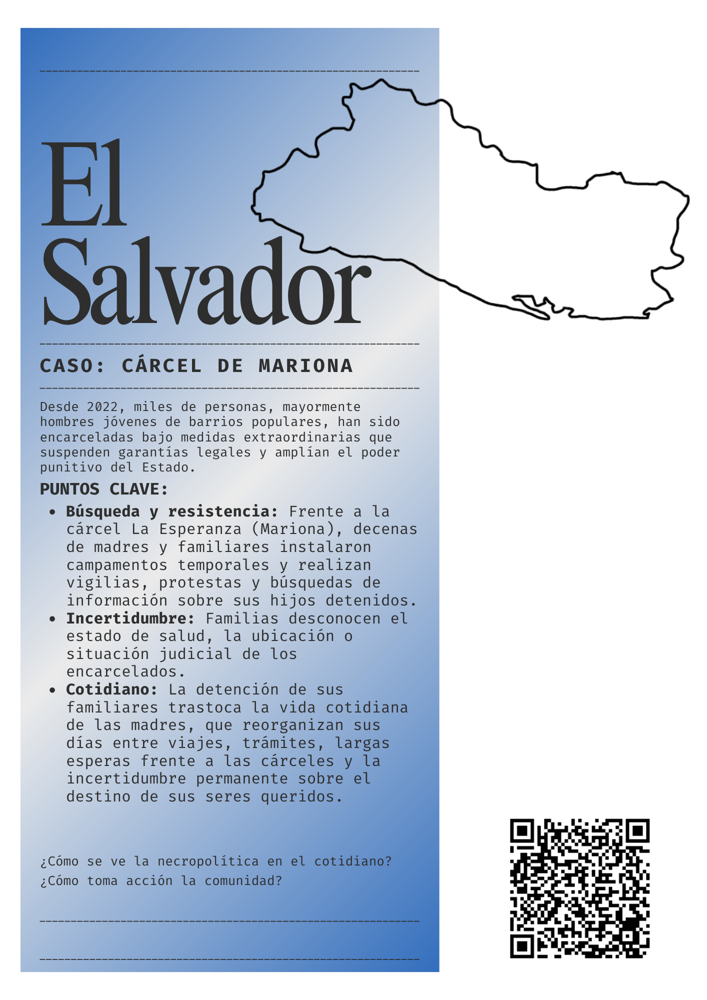
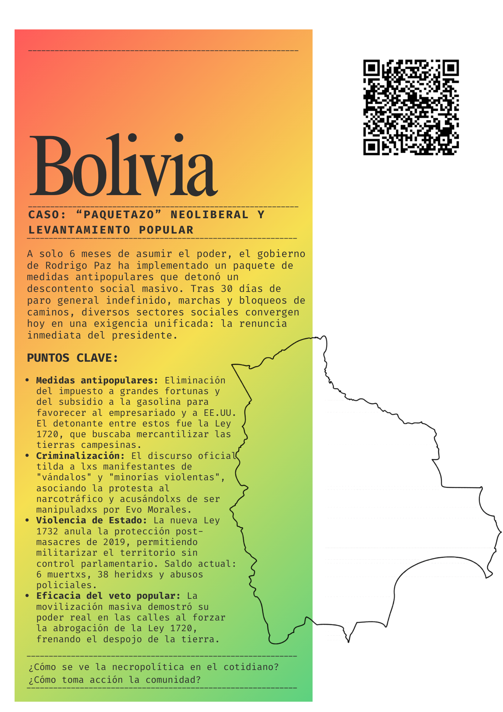
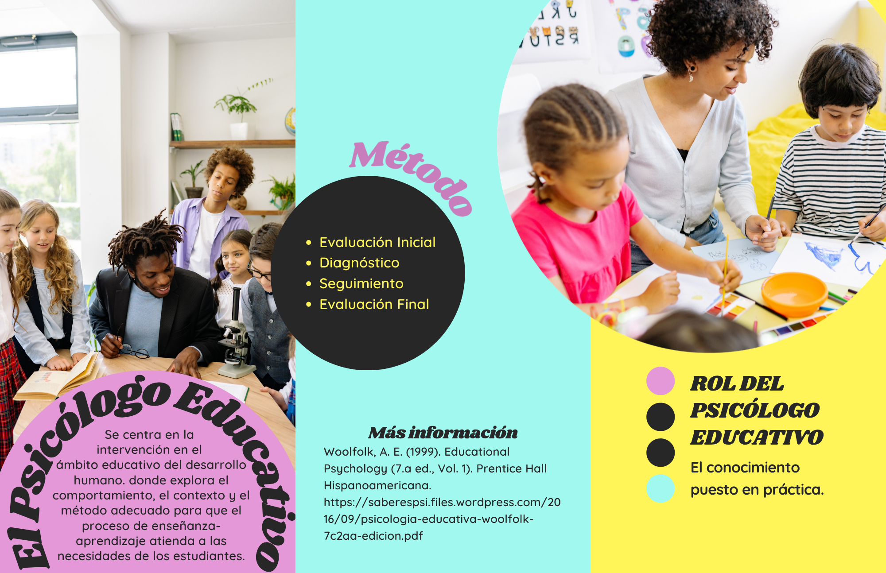
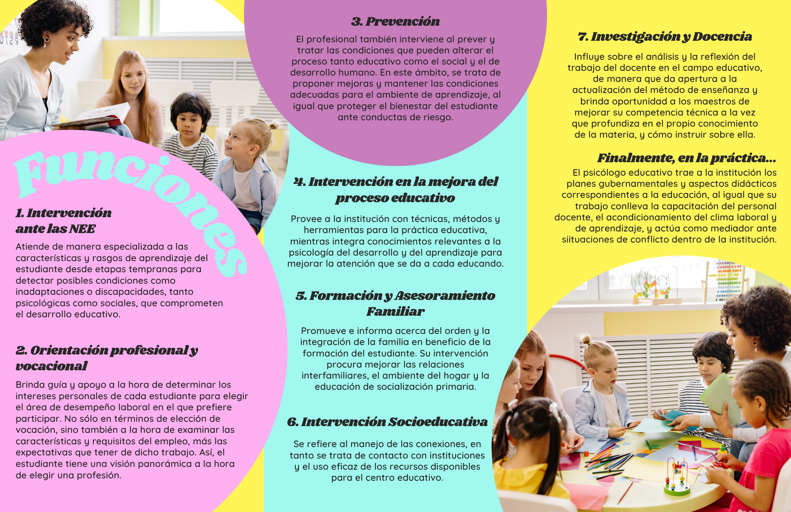
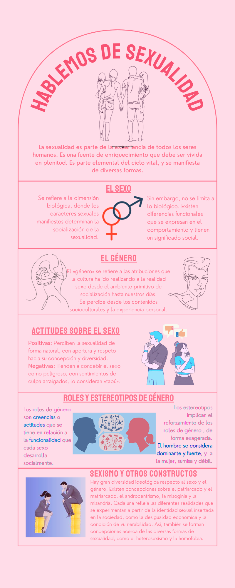
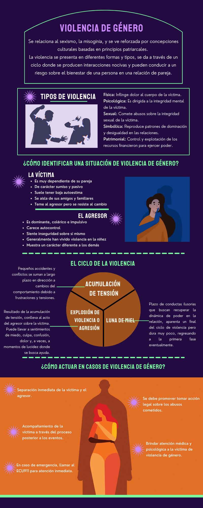

Portfolio & Academic Projects
Hello! I am Santiago, and I am glad that you have taken the time to check out my work. Here you will find designs I have created for university assignments. I studied Psychology in the past and am currently taking North American Studies with some extra coursework in Latin American Studies. I am keen on learning new digital tools to use my creativity and speak about the things I care about the most.
These pieces were all produced with the purpose of communicating scientific knowledge and raise awareness regarding social issues, which is my greatest inspiration. I believe that to make change happen we must reach people by making this knowledge accessible.
Let's see what that looks like.
I made these for an open class I held alongside my classmates at the Lateinamerika-Institut de Freie Universität Berlin during Aktionenwoche 2026 "Wissenschaft gegen Faschismus" where we talked about how people's day to day life is affected by the rise of right wing politics in different Latin American countries. As part of the class, I mediated a discussion where groups were assigned a case study and colectively mapped out the connections between these life experiences. In these handouts, I included a description of each case, keypoints and the guiding questions for our discussion, plus a QR code that leads to further resources from trusted newspapers and social media pages from activist groups at each case's location. The handouts were provided in both Spanish and Portuguese, and they were made in Canva.
You can find a post about our open class featured on the LAI Newsletter here.




During my studies in Psychology, we were encouraged to use digital resources to promote mental health practices and create educational resources about the different applications of Psychology in diverse fields of practice.
Three-fold brochure containing the functions Psychologists perform in the field of Education and Early Development. This brochure was made with the purpose of informing general audiences about the importance of Applied Psychology in the school system. This work was made with Canva and elements of it with Photoshop.


Double-sided single sheet brochure containing introductory concepts to Sexuality, Identity and Sexual Violence. This brochure was made with the purpose of informing general audiences about the differences between sex and gender, how attitudes regarding sex shape social norms and how gender roles affect people in real life: including both the bases upon which sexism perpetuates itself and how sexual violence occurs, and how to prevent it or confront it safely. This work was made with Canva and elements of it with Photoshop.


For a Pre-Professional Practice workshop, I was tasked with creating a Magazine mock-up describing concepts related to Group Work and Mediation Techniques. The purpose of this work was to provide fellow students with a fun, full manual with base concepts of how to work with groups of people, how to handle communication and mediating discussion during different circumstances, mainly facilitating workshops or hosting a group intervention. This work was made with Adobe InDesign.